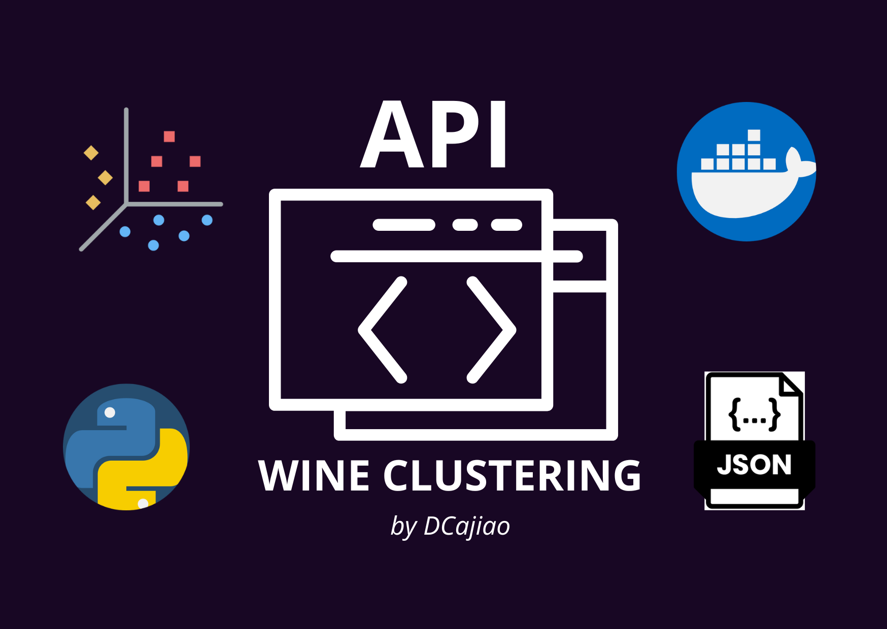

Welcome to the web page of the Data Science Intern Challenge Project for RomBoost.
My name is
David Cajiao and here you will find the results of the
project: Wine
Clustering.
Introduction
Discovering Wine Secrets through Data Analysis
In a world full of nuances and flavors, wine has been for centuries an inexhaustible source of
fascination and pleasure for lovers of good food. Beyond being a simple beverage, wine holds in its
depths a rich history, culture and science that arouses the curiosity of winemakers, sommeliers and
fans alike.
In this project, we dive into the exciting world of wine through an exhaustive analysis of data. We
take on the challenge of unraveling the secrets hidden in a data set obtained from a chemical
analysis of wines grown in the same region of Italy, but derived from three different grape
varieties.
What is the purpose of this project? I have set myself the challenge of exploring this data set with
the goal of revealing patterns, profiles and correlations between the different chemical components
present in the wines. From alcohol content to color intensity to acidity and total phenols, each
attribute offers us a unique window into the sensory complexity of these elixirs.
But why is this project important? Beyond the mere pleasure of research, data analysis applied to the
world of wine has profound implications in a number of areas. From improving production processes
and quality in the wine industry, to discovering consumer trends and market preferences, the
insights gained can be invaluable to producers, distributors and consumers alike.
Come with me on this journey of discovery and learning, where you will explore the most fascinating
corners of winemaking through the eyes of data analysis. Get ready to be surprised, inspired and,
above all, enjoy a good wine!
Results
The depths of data analysis have revealed fascinating findings about our precious wines, unraveling
secrets hidden in each vintage. Through extensive research and rigorous analysis methods, we have
gained a deeper understanding of the complex interactions between wine attributes. These findings,
the product of a project on GitHub, have allowed us to
formulate a series of intriguing questions
that shed light on the unique characteristics of each vintage. From the ten most significant
correlations between wine attributes to the variety of cultivars used in their production, each
question
reveals a different facet of our exciting exploration into the world of wine.
What are the ten correlations with the highest percentage among wine attributes?
Exploring the correlations between different wine attributes gives us a unique insight into how these
components interact in the composition of each vintage. Through detailed analysis, we have
identified the top ten correlations, revealing the most significant relationships between aspects
such as alcohol content, acidity and color intensity. These correlations provide valuable
information on how certain attributes can influence others, contributing to our understanding of the
sensory and chemical profile of each wine.
As we can see, there are wine characteristics with a very high correlation index. If you are a wine
expert, this information will be very useful and interesting for you.
How many wines do we have for each cultivar?
In the analysis, we have carefully examined the distribution of wines by the cultivars, breaking down
the
number of samples available for each vintage. This detailed count reveals a panoramic view of the
diversity and abundance in our wine selection. With this information, we can appreciate the richness
and variety that each vintage brings, offering a wide range of wines to explore and enjoy. From the
most abundant vintages to the most select, each vintage tells its own story, reflecting the unique
characteristics of the wines.
How correlated are the wine characteristics of each crop?
Exploring the correlation between the characteristics of each vintage's wine gives us deep insight
into the intrinsic relationships between the attributes that define its flavor, aroma and
composition. By meticulously examining these correlations, we can discover patterns and trends that
uniquely characterize each vintage. This understanding allows us to appreciate how certain wine
attributes can influence others, and how these relationships can vary from vintage to vintage. From
the complexity and sophistication of older vintages to the freshness and vitality of more recent
ones, each vintage reveals its own internal harmony, enriching our appreciation of the art of wine.
Let's look at the correlations in cultivar 1
Let's look at the correlations in cultivar 2
Let's look at the correlations in cultivar 3
When examining the chemical profile of wines produced in different geographic regions, we observe
notable variations that reflect the distinct characteristics and winemaking practices characteristic
of each area. Between regions, factors such as soil composition, climate, grape varieties and
winemaking techniques contribute to unique chemical compositions in wines. For example, wines from
colder climates may have higher acidity levels due to slower grape ripening, while those from warmer
regions may exhibit richer fruit flavors and higher alcohol content. In addition, soil types, such
as chalky or clay, can influence the mineral content of the wine, adding layers of complexity to its
flavor profile. Winemaking methods, such as fermentation temperature and aging processes, also
influence chemical composition, contributing specific aromas, tannic structures and color intensity
to wines. Ultimately, the chemical profile of wines from different geographic regions provides
insight into the diverse environments and winemaking traditions that contribute to the richness and
complexity of the global wine landscape.
In which cultivar is the most intensely colored wine produced?
Inquiring into the vintage that produces the most intensely colored wine immerses us in the chromatic
and sensory richness of the different wine varieties. This question leads us to explore beyond the
surface of the wine, delving into its deep visual nuance. By discovering which vintage stands out
for its chromatic intensity, we can appreciate how factors such as soil, climate and cultivation
techniques influence the visual appearance of the wine. It is an invitation to dive into a world of
rich and vibrant hues, where each vintage has its own story to tell through color.
Which cultivar produces the wine with the highest alcohol content?
The question of which cultivar produces the wine with the highest alcohol content leads us to explore
the
particularities of each type of grape and how they influence the final result. Through data
analysis, we can discover which variety stands out for its high alcohol content, which helps us
better understand how factors such as climate and growing practices affect the wine. This finding
gives us an interesting look at how grape ripening and the fermentation process influence the
properties of the wine we enjoy in each glass.
In which cultivar is the wine with the greatest sensation of freshness produced?
Exploring the vintage that produces the wine with the greatest sensation of freshness takes us into
the world of wine chemistry. From a chemical point of view, freshness in a wine is closely related
to the malic acid index. This question invites us to discover which vintage distinguishes itself by
offering a unique sensory experience of freshness. By identifying this characteristic, we can dive
into the more subtle and refreshing aspects of wine tasting, exploring how chemical components
contribute to creating a memorable sensory experience. It is a window into the sophistication of
flavors and aromas that can emerge from the perfect combination of climate, soil and growing
techniques.
In which crop is the healthiest wine produced?
The question of which crop produces the healthiest wine leads us to explore the scientific aspects
behind wine health. From a scientific point of view, wines with a high antioxidant index, including
flavonoids and proanthocyanidins, are considered the healthiest and most beneficial to the body. By
identifying which crop excels in producing wines with these properties, we can better understand how
certain farming practices and soil characteristics influence the chemical composition of the wine
and thus its health benefits. This discovery offers an intriguing perspective on how grape choice
and winemaking methods can positively impact our health when we enjoy a glass of wine.
So we can conclude that the healthiest wine, i.e., the one with the highest antioxidant content
indexes, are the wines produced in cultivar 1.
Conclusions
What can we say about each crop?
When analyzing the results of each crop, we can appreciate different strengths and distinctive
characteristics in wine production.
Cultivar 1:
Cultivar 1 stands out for producing wines with the highest alcohol content, which can be attributed
to certain climatic conditions or specific growing practices. In addition, this crop presents wines
that are classified as the healthiest, suggesting a unique combination of antioxidants and other
compounds beneficial to health.
Cultivar 2:
On the other hand, Cultivar 2 excels in the color intensity of its wines, which may be a result of
factors such as the type of grape or winemaking techniques employed. Although it does not reach the
extreme levels of alcohol as Cultivar 1, its wines maintain an adequate balance in this aspect.
Cultivar 3:
Finally, Cultivar 3 is distinguished by the quantity of wines produced, which may indicate a greater
diversity in the grape varieties grown or winemaking methods used. In addition, although it does not
lead in terms of alcohol content or color intensity, its wines still offer health benefits,
reflecting a focus on quality and nutritional composition in wine production.
API Wine Clustering

How does the Wine Clustering API work?
With each request, the Wine Clustering API consumes the google API to obtain the dataset (csv file)
again in each execution, this is thought so that in case there is an update of data in the online
csv, the API can consume that new data to process it later...
Once the data is obtained in real time, the Wine Clustering API loads the content of the dataset to a
Pandas dataframe to subsequently run a
KMeans
model that allows us to classify the wines in 3 different cultivars (why in 3 cultivars?, in
the Github repository,
you will find more details about the technical and mathematical process that
was applied to reach this value).
Once the wines are classified, the Wine Clustering API performs a labeling of the results obtained
by the KMeans classification, or in other words, it attaches a label about the origin of that wine:
Cultivar 1, Cultivar 2 or Cultivar 3? well, thanks to the Wine Clustering API we can know...
If you want to get the classified dataset, I invite you to make use of the Wine Clustering API. You
can make the request to this link.
https://dcajiao-wine-clustering-api.onrender.com/
Or access through your browser on the following button:
The API is currently deployed on a free Render service, so
it may occasionally take about 8s to reload each request, please be patient.
You can find more information about the deployment, the technologies and the containerization method
in the Github
repository.
GitHub
Wine Clustering Challenge
For those of you who wish to dive into the technical details and explore the process behind
this project, I invite you to visit my Github repository. There you will find the complete source
code complete, carefully documented and organized source code that supports every step of the
analysis.
From loading data loading through the API, the graphs made, the implementation of clustering
algorithms, the development of the public API and the development of the public API,
to the development of a self-deployed API for the use of any other internet user, don't miss the
opportunity to explore my repository and discover the secrets that data analysis reveals in the
fascinating world of wine!
Solve these and more questions in the Github repository:
What does each branch contain? Why was it divided into 3 branches?
What was done in the EDA and ETL process (Jupyter Notebook)?
What graphs were constructed after the ETL (Graphics)?
What technologies were implemented for the API?
What service was used for the deployment of the AppWeb and API?